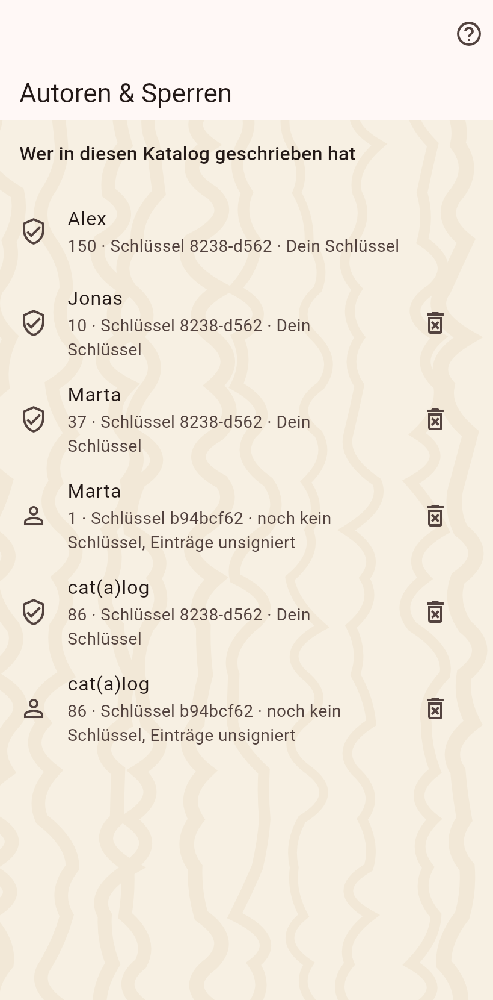

Die Personen, deren Einträge diesen Katalog erreicht haben, mit dem, was sie schrieben. Und die drei Arten, etwas für dich zu behalten: privat, versteckt, gesperrt.

Jeder Eintrag trägt seinen Autor und den Schlüsselcode des Geräts. Die Moderationsseite listet sie; lösche die Daten einer Person auf diesem Gerät und sperre ihr Gerät für weitere Sendungen. Eine Sperre ist lokal und umkehrbar; ein endgültiges Löschen entfernt die Einträge und Fotos für immer, die eine Ausnahme einer Historie, die sonst nie gelöscht wird.
Ein in seinem Editor als privat markierter Wert bleibt auf diesem Gerät, es sei denn, ein Teilen hat den Privat-Schalter an. Partner sehen ein Schloss auf der leeren Zeile. Dass eine Katze existiert, ist nie privat, nur ein Wert.
Eine auf diesem Gerät versteckte Katze, ein Zuhause oder ein Feld wird weiter empfangen, gespeichert und weitergegeben; es wird nur nicht gezeigt. "Verstecktes zeigen" im Menü der Startseite holt es hervor, und das Menü eines versteckten Dings macht es wieder sichtbar.